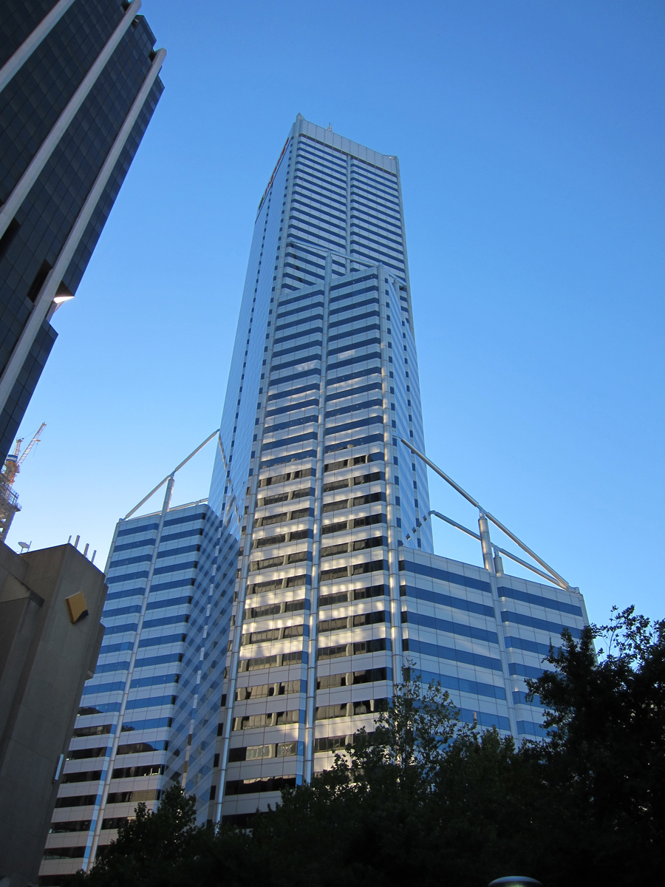
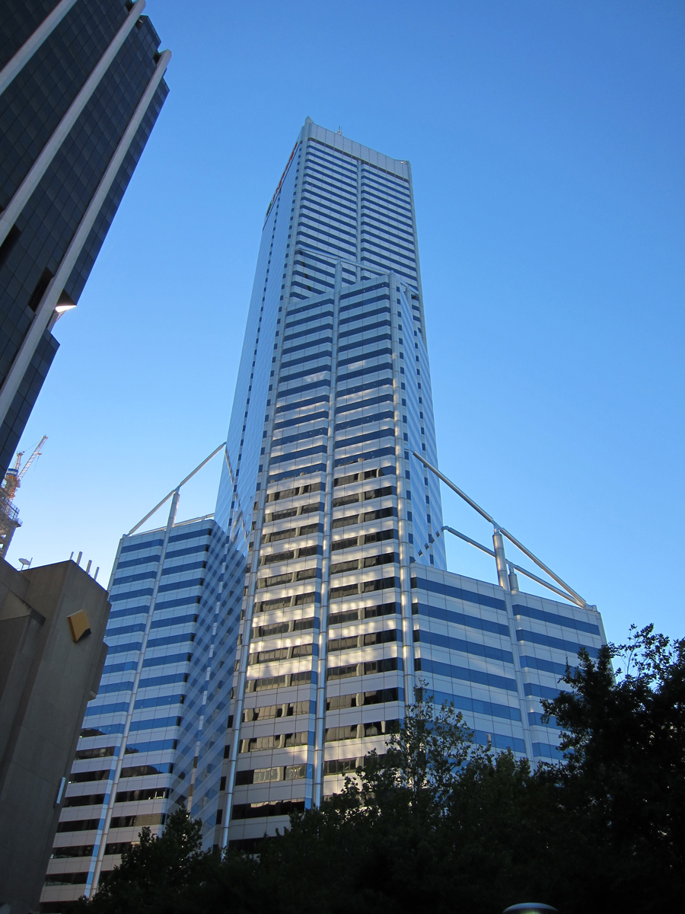

CENTRAL PARK

Conservatory Pond in Central Park
This photo of Conservatory Pond in Central Park in New York City was taken on October 22, 2016 with a Canon EOS 30D camera.
RELATED PHOTOS
 

REVIEWS
By Susan on
I love Central Park.
By Ricardo on
Easy on the HDR buddy.